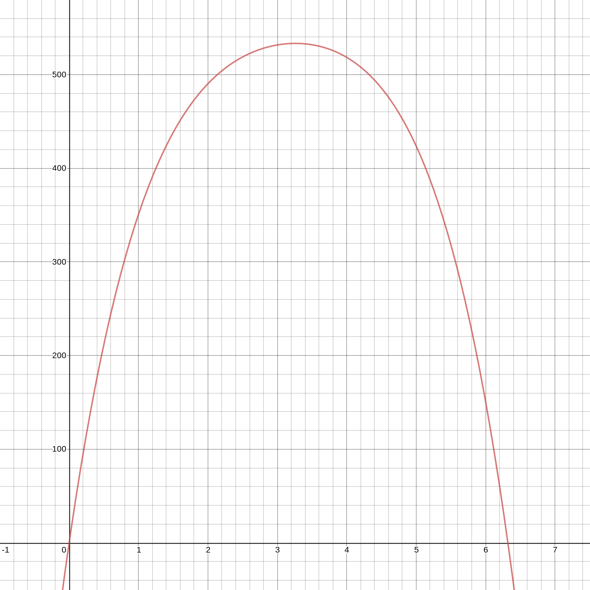
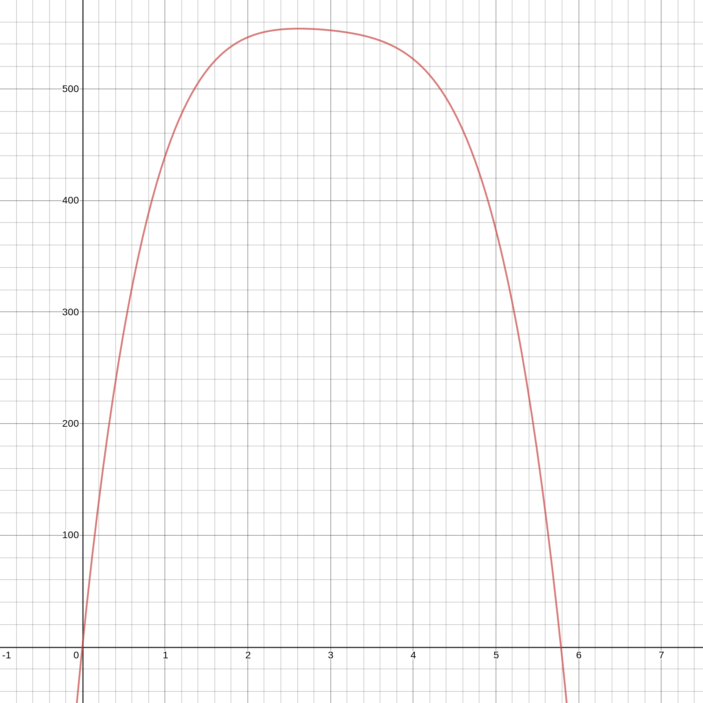
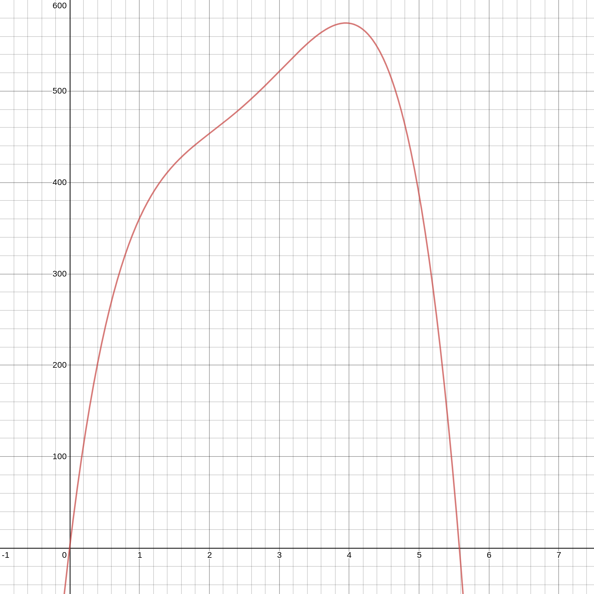

I made some calculators based on the findings of this study . This is all the math I had to do to make them work.
The study measures the maximal vertical force produced by a group of climbers with 3 different grip types (half crimp, full crimp, slope a.k.a. 4 finger open hand) on 10mm, 20mm, 30mm, and 40mm edges. The methodology is better explained in the study itself, but basically the climbers pulled on a force sensor for each grip/edge combo and researchers recorded the maximal force. They graphed the points and did some curve fitting and obtained the following polynomials:
Functions (f(x))
half crimp $$f(x)=-2.92\cdot{ x}^{4}+36.43\cdot{ x}^{3}+-194.6\cdot{ x}^{2}+512\cdot x$$ full crimp $$f(x)=-6.83\cdot{ x}^{4}+79.72\cdot{ x}^{3}+-357.8\cdot{ x}^{2}+724.5\cdot x$$ slope $$f(x)=-9.74\cdot{ x}^{4}+98.97\cdot{ x}^{3}+-362.7\cdot{ x}^{2}+634.2\cdot x$$
You plug in x, the depth of your edge in cm, and out comes the expected force you can generate on that edge, in newtons.
I did some brainstorming and I came up with the following questions that I figured would be useful to me as someone who hangboards.
What percentage of my max weight can I hang on an x mm edge?
If I can hang x total weight on a y mm edge, how much weight total can I hang on a z mm edge?
If I can hang x total weight on a y mm edge, what is the maximum total weight I can hang, and on what edge size?
If I can hang x total weight on a y mm edge, on what size edge (mm) can I hang z total weight?
If I can hang with x weight added to y bodyweight on a z mm edge, what is the smallest edge I can hang at just bodyweight?
What percentage of my max weight can I hang on an x mm edge?
To find this I scale the functions. I take the output force in newtons, and divide it by y-coordinate of the absolute maximum of the polynomial, to get a percentage of the max force (e.g. 2% = 0.02). I'm also going to convert x; I'll take it in millimeters and convert to centimeters in the function. Now x is the edge depth in mm, and the function outputs an expected percentage of the max weight that you can hang.
Scaled functions (fscaled (x))
half crimp $$f_{scaled}(x)=\frac{-2.92\cdot\left({\frac{ x}{10}}\right)^{4}+36.43\cdot\left({\frac{ x}{10}}\right)^{3}+-194.6\cdot\left({\frac{ x}{10}}\right)^{2}+512\cdot\frac{ x}{10}}{533.34}$$ full crimp $$f_{scaled}(x)=\frac{-6.83\cdot\left({\frac{ x}{10}}\right)^{4}+79.72\cdot\left({\frac{ x}{10}}\right)^{3}+-357.8\cdot\left({\frac{ x}{10}}\right)^{2}+724.5\cdot\frac{ x}{10}}{554.021}$$ slope $$f_{scaled}(x)=\frac{-9.74\cdot\left({\frac{ x}{10}}\right)^{4}+98.97\cdot\left({\frac{ x}{10}}\right)^{3}+-362.7\cdot\left({\frac{ x}{10}}\right)^{2}+634.2\cdot\frac{ x}{10}}{574.486}$$
Here's an example, for half crimp edge depth 18mm:
$$\displaylines {
percentage=\frac{-2.92\cdot\left({\frac{ x}{10}}\right)^{4}+36.43\cdot\left({\frac{ x}{10}}\right)^{3}+-194.6\cdot\left({\frac{ x}{10}}\right)^{2}+512\cdot\frac{ x}{10}}{533.34} \\
percentage=\frac{-2.92\cdot\left({\frac{18}{10}}\right)^{4}+36.43\cdot\left({\frac{18}{10}}\right)^{3}+-194.6\cdot\left({\frac{18}{10}}\right)^{2}+512\cdot\frac{18}{10}}{533.34} \\
percentage = 0.89\space or\space 89\%
}$$
If I can hang x total weight on a y mm edge, how much weight total can I hang on a z mm edge?
I know that on y edge I can hang some percentage j of my max weight, and j percent of my max weight is x. From this I can get the actual value of my max weight. The weight I can hang on z edge is just a different percent k of my max weight, so once I know my actual max I can find the weight easily.
$$\displaylines {
j=f_{scaled}(y) \\
x = j\% \space of\space max \\
x = j*max \\
\frac{x}{j} = max \\
\frac{x}{f_{scaled}(y)}=max \\
\\
k=f_{scaled}(z) \\
weight= k\% \space of\space max \\
weight = k*max \\
weight = f_{scaled}(z)*\frac{x}{f_{scaled}(y)}
}$$
If I can hang x total weight on a y mm edge, what is the maximum total weight I can hang, and on what edge size?
I found the max weight in the last calculation:
$$max=\frac{x}{f_{scaled}(y)}$$
To find the optimal edge size, I graph each function. I see there's an absolute maximum for each. Now I know that for exactly one edge x, fscaled (x) returns 100%. The point (x,100%) is the absolute maximum of the scaled function, and x is the optimal edge depth. For half crimp, optimal edge is 32.6068 mm, full crimp 26.1901 mm, and slope 39.5151 mm. Here are the graphs of each function:

Half crimp equation graph

Full crimp equation graph

Slope equation graph
If I can hang with x weight added to y bodyweight on a z mm edge, what is the smallest edge I can hang at just bodyweight?
I know:
$$\displaylines {
total \space weight = x + y \\
\frac{total \space weight}{f_{scaled}(z)}=max \\
y \div max = j
}$$
Bodyweight is j percent of max.
fscaled (x) takes an edge depth in mm as input and outputs a percentage of max. I need to find its inverse f'scaled (x), which takes a percentage and ouputs an edge depth, and plug in j to get the edge I can hang at bodyweight.
If I find f'(x) first, it's easy to find f'scaled (x), so that's what I'll do. Here I'm using the half crimp function:
$$\displaylines {
f(x)=-2.92\cdot{ x}^{4}+36.43\cdot{ x}^{3}+-194.6\cdot{ x}^{2}+512\cdot x \\
y=-2.92\cdot{ x}^{4}+36.43\cdot{ x}^{3}+-194.6\cdot{ x}^{2}+512\cdot x \\
x=-2.92\cdot{ y}^{4}+36.43\cdot{ y}^{3}+-194.6\cdot{ y}^{2}+512\cdot y \\
0=-2.92\cdot{ y}^{4}+36.43\cdot{ y}^{3}+-194.6\cdot{ y}^{2}+512\cdot y-x
}$$
This is a quartic function:
$$\displaylines {
a\cdot{ y}^{4}+b\cdot{ y}^{3}+c\cdot{ y}^{2}+d\cdot y+e \\
a=-2.92,\space b=36.43,\space c=-194.6,\space d=512,\space e=-x
}$$
I can use the equations for roots of a quartic to solve it. I found these equations here , and I'll include them below. I plug the above values of a, b, c, d, and e into each one, and then I have four formulas for edge depth in terms of force, like I need. Then I can plug in any force to all 4, take the real values (some of these formulas will evaluate to a real number, and some won't; this is the mathematical reasoning why), and that set of real values is the output of f'(x). To get f'scaled (x) I just convert units, like I did for f'scaled (x). Half crimp scaled looks like this:
$$f'_{scaled}(x)=f'(x*533.34)*10$$
So:
$$\displaylines {
smallest \space edge = f'_{scaled}\left( j \right) \\
max=\frac{x+y}{f_{scaled}(z)} \\
j = y \div max \\
smallest \space edge = f'_{scaled}\left( y\div \frac{x+y}{f_{scaled}(z)} \right)
}$$
The formulas for the quartic roots are:
$$x_1=\frac{-\mathrm{b}}{4\cdot a}-\frac{1}{2}\cdot\sqrt{\frac{{\mathrm{b}}^{2}}{4\cdot{ a}^{2}}-\frac{2\cdot c}{3\cdot a}+\frac{{2}^{\frac{1}{3}}\cdot\left({ c}^{2}-3\cdot\mathrm{b}\cdot d+12\cdot a\cdot e\right)}{3\cdot a\cdot{\left(2\cdot{ c}^{3}-9\cdot\mathrm{b}\cdot c\cdot d+27\cdot a\cdot{ d}^{2}+27\cdot{\mathrm{b}}^{2}\cdot e-72\cdot a\cdot c\cdot e+\sqrt{-4\cdot{\left({ c}^{2}-3\cdot\mathrm{b}\cdot d+12\cdot a\cdot e\right)}^{3}+{\left(2\cdot{ c}^{3}-9\cdot\mathrm{b}\cdot c\cdot d+27\cdot a\cdot{ d}^{2}+27\cdot{\mathrm{b}}^{2}\cdot e-72\cdot a\cdot c\cdot e\right)}^{2}}\right)}^{\frac{1}{3}}}+\frac{1}{3\cdot{2}^{\frac{1}{3}}\cdot a}\cdot{\left(2\cdot{ c}^{3}-9\cdot\mathrm{b}\cdot c\cdot d+27\cdot a\cdot{ d}^{2}+27\cdot{\mathrm{b}}^{2}\cdot e-72\cdot a\cdot c\cdot e+\sqrt{-4\cdot{\left({ c}^{2}-3\cdot\mathrm{b}\cdot d+12\cdot a\cdot e\right)}^{3}+{\left(2\cdot{ c}^{3}-9\cdot\mathrm{b}\cdot c\cdot d+27\cdot a\cdot{ d}^{2}+27\cdot{\mathrm{b}}^{2}\cdot e-72\cdot a\cdot c\cdot e\right)}^{2}}\right)}^{\frac{1}{3}}}-\frac{1}{2}\cdot\sqrt{\frac{{\mathrm{b}}^{2}}{2\cdot{ a}^{2}}-\frac{4\cdot c}{3\cdot a}-\frac{{2}^{\frac{1}{3}}\cdot\left({ c}^{2}-3\cdot\mathrm{b}\cdot d+12\cdot a\cdot e\right)}{3\cdot a\cdot{\left(2\cdot{ c}^{3}-9\cdot\mathrm{b}\cdot c\cdot d+27\cdot a\cdot{ d}^{2}+27\cdot{\mathrm{b}}^{2}\cdot e-72\cdot a\cdot c\cdot e+\sqrt{-4\cdot{\left({ c}^{2}-3\cdot\mathrm{b}\cdot d+12\cdot a\cdot e\right)}^{3}+{\left(2\cdot{ c}^{3}-9\cdot\mathrm{b}\cdot c\cdot d+27\cdot a\cdot{ d}^{2}+27\cdot{\mathrm{b}}^{2}\cdot e-72\cdot a\cdot c\cdot e\right)}^{2}}\right)}^{\frac{1}{3}}}-\frac{1}{3\cdot{2}^{\frac{1}{3}}\cdot a}\cdot{\left(2\cdot{ c}^{3}-9\cdot\mathrm{b}\cdot c\cdot d+27\cdot a\cdot{ d}^{2}+27\cdot{\mathrm{b}}^{2}\cdot e-72\cdot a\cdot c\cdot e+\sqrt{-4\cdot{\left({ c}^{2}-3\cdot\mathrm{b}\cdot d+12\cdot a\cdot e\right)}^{3}+{\left(2\cdot{ c}^{3}-9\cdot\mathrm{b}\cdot c\cdot d+27\cdot a\cdot{ d}^{2}+27\cdot{\mathrm{b}}^{2}\cdot e-72\cdot a\cdot c\cdot e\right)}^{2}}\right)}^{\frac{1}{3}}-\frac{\frac{-{\mathrm{b}}^{3}}{{ a}^{3}}+\frac{4\cdot\mathrm{b}\cdot c}{{ a}^{2}}-\frac{8\cdot d}{ a}}{4\cdot\sqrt{\frac{{\mathrm{b}}^{2}}{4\cdot{ a}^{2}}-\frac{2\cdot c}{3\cdot a}+\frac{{2}^{\frac{1}{3}}\cdot\left({ c}^{2}-3\cdot\mathrm{b}\cdot d+12\cdot a\cdot e\right)}{3\cdot a\cdot{\left(2\cdot{ c}^{3}-9\cdot\mathrm{b}\cdot c\cdot d+27\cdot a\cdot{ d}^{2}+27\cdot{\mathrm{b}}^{2}\cdot e-72\cdot a\cdot c\cdot e+\sqrt{-4\cdot{\left({ c}^{2}-3\cdot\mathrm{b}\cdot d+12\cdot a\cdot e\right)}^{3}+{\left(2\cdot{ c}^{3}-9\cdot\mathrm{b}\cdot c\cdot d+27\cdot a\cdot{ d}^{2}+27\cdot{\mathrm{b}}^{2}\cdot e-72\cdot a\cdot c\cdot e\right)}^{2}}\right)}^{\frac{1}{3}}}+\frac{1}{3\cdot{2}^{\frac{1}{3}}\cdot a}\cdot{\left(2\cdot{ c}^{3}-9\cdot\mathrm{b}\cdot c\cdot d+27\cdot a\cdot{ d}^{2}+27\cdot{\mathrm{b}}^{2}\cdot e-72\cdot a\cdot c\cdot e+\sqrt{-4\cdot{\left({ c}^{2}-3\cdot\mathrm{b}\cdot d+12\cdot a\cdot e\right)}^{3}+{\left(2\cdot{ c}^{3}-9\cdot\mathrm{b}\cdot c\cdot d+27\cdot a\cdot{ d}^{2}+27\cdot{\mathrm{b}}^{2}\cdot e-72\cdot a\cdot c\cdot e\right)}^{2}}\right)}^{\frac{1}{3}}}}}$$
$$x_2=\frac{-\mathrm{b}}{4\cdot a}-\frac{1}{2}\cdot\sqrt{\frac{{\mathrm{b}}^{2}}{4\cdot{ a}^{2}}-\frac{2\cdot c}{3\cdot a}+\frac{{2}^{\frac{1}{3}}\cdot\left({ c}^{2}-3\cdot\mathrm{b}\cdot d+12\cdot a\cdot e\right)}{3\cdot a\cdot{\left(2\cdot{ c}^{3}-9\cdot\mathrm{b}\cdot c\cdot d+27\cdot a\cdot{ d}^{2}+27\cdot{\mathrm{b}}^{2}\cdot e-72\cdot a\cdot c\cdot e+\sqrt{-4\cdot{\left({ c}^{2}-3\cdot\mathrm{b}\cdot d+12\cdot a\cdot e\right)}^{3}+{\left(2\cdot{ c}^{3}-9\cdot\mathrm{b}\cdot c\cdot d+27\cdot a\cdot{ d}^{2}+27\cdot{\mathrm{b}}^{2}\cdot e-72\cdot a\cdot c\cdot e\right)}^{2}}\right)}^{\frac{1}{3}}}+\frac{1}{3\cdot{2}^{\frac{1}{3}}\cdot a}\cdot{\left(2\cdot{ c}^{3}-9\cdot\mathrm{b}\cdot c\cdot d+27\cdot a\cdot{ d}^{2}+27\cdot{\mathrm{b}}^{2}\cdot e-72\cdot a\cdot c\cdot e+\sqrt{-4\cdot{\left({ c}^{2}-3\cdot\mathrm{b}\cdot d+12\cdot a\cdot e\right)}^{3}+{\left(2\cdot{ c}^{3}-9\cdot\mathrm{b}\cdot c\cdot d+27\cdot a\cdot{ d}^{2}+27\cdot{\mathrm{b}}^{2}\cdot e-72\cdot a\cdot c\cdot e\right)}^{2}}\right)}^{\frac{1}{3}}}+\frac{1}{2}\cdot\sqrt{\frac{{\mathrm{b}}^{2}}{2\cdot{ a}^{2}}-\frac{4\cdot c}{3\cdot a}-\frac{{2}^{\frac{1}{3}}\cdot\left({ c}^{2}-3\cdot\mathrm{b}\cdot d+12\cdot a\cdot e\right)}{3\cdot a\cdot{\left(2\cdot{ c}^{3}-9\cdot\mathrm{b}\cdot c\cdot d+27\cdot a\cdot{ d}^{2}+27\cdot{\mathrm{b}}^{2}\cdot e-72\cdot a\cdot c\cdot e+\sqrt{-4\cdot{\left({ c}^{2}-3\cdot\mathrm{b}\cdot d+12\cdot a\cdot e\right)}^{3}+{\left(2\cdot{ c}^{3}-9\cdot\mathrm{b}\cdot c\cdot d+27\cdot a\cdot{ d}^{2}+27\cdot{\mathrm{b}}^{2}\cdot e-72\cdot a\cdot c\cdot e\right)}^{2}}\right)}^{\frac{1}{3}}}-\frac{1}{3\cdot{2}^{\frac{1}{3}}\cdot a}\cdot{\left(2\cdot{ c}^{3}-9\cdot\mathrm{b}\cdot c\cdot d+27\cdot a\cdot{ d}^{2}+27\cdot{\mathrm{b}}^{2}\cdot e-72\cdot a\cdot c\cdot e+\sqrt{-4\cdot{\left({ c}^{2}-3\cdot\mathrm{b}\cdot d+12\cdot a\cdot e\right)}^{3}+{\left(2\cdot{ c}^{3}-9\cdot\mathrm{b}\cdot c\cdot d+27\cdot a\cdot{ d}^{2}+27\cdot{\mathrm{b}}^{2}\cdot e-72\cdot a\cdot c\cdot e\right)}^{2}}\right)}^{\frac{1}{3}}-\frac{\frac{-{\mathrm{b}}^{3}}{{ a}^{3}}+\frac{4\cdot\mathrm{b}\cdot c}{{ a}^{2}}-\frac{8\cdot d}{ a}}{4\cdot\sqrt{\frac{{\mathrm{b}}^{2}}{4\cdot{ a}^{2}}-\frac{2\cdot c}{3\cdot a}+\frac{{2}^{\frac{1}{3}}\cdot\left({ c}^{2}-3\cdot\mathrm{b}\cdot d+12\cdot a\cdot e\right)}{3\cdot a\cdot{\left(2\cdot{ c}^{3}-9\cdot\mathrm{b}\cdot c\cdot d+27\cdot a\cdot{ d}^{2}+27\cdot{\mathrm{b}}^{2}\cdot e-72\cdot a\cdot c\cdot e+\sqrt{-4\cdot{\left({ c}^{2}-3\cdot\mathrm{b}\cdot d+12\cdot a\cdot e\right)}^{3}+{\left(2\cdot{ c}^{3}-9\cdot\mathrm{b}\cdot c\cdot d+27\cdot a\cdot{ d}^{2}+27\cdot{\mathrm{b}}^{2}\cdot e-72\cdot a\cdot c\cdot e\right)}^{2}}\right)}^{\frac{1}{3}}}+\frac{1}{3\cdot{2}^{\frac{1}{3}}\cdot a}\cdot{\left(2\cdot{ c}^{3}-9\cdot\mathrm{b}\cdot c\cdot d+27\cdot a\cdot{ d}^{2}+27\cdot{\mathrm{b}}^{2}\cdot e-72\cdot a\cdot c\cdot e+\sqrt{-4\cdot{\left({ c}^{2}-3\cdot\mathrm{b}\cdot d+12\cdot a\cdot e\right)}^{3}+{\left(2\cdot{ c}^{3}-9\cdot\mathrm{b}\cdot c\cdot d+27\cdot a\cdot{ d}^{2}+27\cdot{\mathrm{b}}^{2}\cdot e-72\cdot a\cdot c\cdot e\right)}^{2}}\right)}^{\frac{1}{3}}}}}$$
$$x_3=\frac{-\mathrm{b}}{4\cdot a}+\frac{1}{2}\cdot\sqrt{\frac{{\mathrm{b}}^{2}}{4\cdot{ a}^{2}}-\frac{2\cdot c}{3\cdot a}+\frac{{2}^{\frac{1}{3}}\cdot\left({ c}^{2}-3\cdot\mathrm{b}\cdot d+12\cdot a\cdot e\right)}{3\cdot a\cdot{\left(2\cdot{ c}^{3}-9\cdot\mathrm{b}\cdot c\cdot d+27\cdot a\cdot{ d}^{2}+27\cdot{\mathrm{b}}^{2}\cdot e-72\cdot a\cdot c\cdot e+\sqrt{-4\cdot{\left({ c}^{2}-3\cdot\mathrm{b}\cdot d+12\cdot a\cdot e\right)}^{3}+{\left(2\cdot{ c}^{3}-9\cdot\mathrm{b}\cdot c\cdot d+27\cdot a\cdot{ d}^{2}+27\cdot{\mathrm{b}}^{2}\cdot e-72\cdot a\cdot c\cdot e\right)}^{2}}\right)}^{\frac{1}{3}}}+\frac{1}{3\cdot{2}^{\frac{1}{3}}\cdot a}\cdot{\left(2\cdot{ c}^{3}-9\cdot\mathrm{b}\cdot c\cdot d+27\cdot a\cdot{ d}^{2}+27\cdot{\mathrm{b}}^{2}\cdot e-72\cdot a\cdot c\cdot e+\sqrt{-4\cdot{\left({ c}^{2}-3\cdot\mathrm{b}\cdot d+12\cdot a\cdot e\right)}^{3}+{\left(2\cdot{ c}^{3}-9\cdot\mathrm{b}\cdot c\cdot d+27\cdot a\cdot{ d}^{2}+27\cdot{\mathrm{b}}^{2}\cdot e-72\cdot a\cdot c\cdot e\right)}^{2}}\right)}^{\frac{1}{3}}}-\frac{1}{2}\cdot\sqrt{\frac{{\mathrm{b}}^{2}}{2\cdot{ a}^{2}}-\frac{4\cdot c}{3\cdot a}-\frac{{2}^{\frac{1}{3}}\cdot\left({ c}^{2}-3\cdot\mathrm{b}\cdot d+12\cdot a\cdot e\right)}{3\cdot a\cdot{\left(2\cdot{ c}^{3}-9\cdot\mathrm{b}\cdot c\cdot d+27\cdot a\cdot{ d}^{2}+27\cdot{\mathrm{b}}^{2}\cdot e-72\cdot a\cdot c\cdot e+\sqrt{-4\cdot{\left({ c}^{2}-3\cdot\mathrm{b}\cdot d+12\cdot a\cdot e\right)}^{3}+{\left(2\cdot{ c}^{3}-9\cdot\mathrm{b}\cdot c\cdot d+27\cdot a\cdot{ d}^{2}+27\cdot{\mathrm{b}}^{2}\cdot e-72\cdot a\cdot c\cdot e\right)}^{2}}\right)}^{\frac{1}{3}}}-\frac{1}{3\cdot{2}^{\frac{1}{3}}\cdot a}\cdot{\left(2\cdot{ c}^{3}-9\cdot\mathrm{b}\cdot c\cdot d+27\cdot a\cdot{ d}^{2}+27\cdot{\mathrm{b}}^{2}\cdot e-72\cdot a\cdot c\cdot e+\sqrt{-4\cdot{\left({ c}^{2}-3\cdot\mathrm{b}\cdot d+12\cdot a\cdot e\right)}^{3}+{\left(2\cdot{ c}^{3}-9\cdot\mathrm{b}\cdot c\cdot d+27\cdot a\cdot{ d}^{2}+27\cdot{\mathrm{b}}^{2}\cdot e-72\cdot a\cdot c\cdot e\right)}^{2}}\right)}^{\frac{1}{3}}+\frac{\frac{-{\mathrm{b}}^{3}}{{ a}^{3}}+\frac{4\cdot\mathrm{b}\cdot c}{{ a}^{2}}-\frac{8\cdot d}{ a}}{4\cdot\sqrt{\frac{{\mathrm{b}}^{2}}{4\cdot{ a}^{2}}-\frac{2\cdot c}{3\cdot a}+\frac{{2}^{\frac{1}{3}}\cdot\left({ c}^{2}-3\cdot\mathrm{b}\cdot d+12\cdot a\cdot e\right)}{3\cdot a\cdot{\left(2\cdot{ c}^{3}-9\cdot\mathrm{b}\cdot c\cdot d+27\cdot a\cdot{ d}^{2}+27\cdot{\mathrm{b}}^{2}\cdot e-72\cdot a\cdot c\cdot e+\sqrt{-4\cdot{\left({ c}^{2}-3\cdot\mathrm{b}\cdot d+12\cdot a\cdot e\right)}^{3}+{\left(2\cdot{ c}^{3}-9\cdot\mathrm{b}\cdot c\cdot d+27\cdot a\cdot{ d}^{2}+27\cdot{\mathrm{b}}^{2}\cdot e-72\cdot a\cdot c\cdot e\right)}^{2}}\right)}^{\frac{1}{3}}}+\frac{1}{3\cdot{2}^{\frac{1}{3}}\cdot a}\cdot{\left(2\cdot{ c}^{3}-9\cdot\mathrm{b}\cdot c\cdot d+27\cdot a\cdot{ d}^{2}+27\cdot{\mathrm{b}}^{2}\cdot e-72\cdot a\cdot c\cdot e+\sqrt{-4\cdot{\left({ c}^{2}-3\cdot\mathrm{b}\cdot d+12\cdot a\cdot e\right)}^{3}+{\left(2\cdot{ c}^{3}-9\cdot\mathrm{b}\cdot c\cdot d+27\cdot a\cdot{ d}^{2}+27\cdot{\mathrm{b}}^{2}\cdot e-72\cdot a\cdot c\cdot e\right)}^{2}}\right)}^{\frac{1}{3}}}}}$$
$$x_4=\frac{-\mathrm{b}}{4\cdot a}+\frac{1}{2}\cdot\sqrt{\frac{{\mathrm{b}}^{2}}{4\cdot{ a}^{2}}-\frac{2\cdot c}{3\cdot a}+\frac{{2}^{\frac{1}{3}}\cdot\left({ c}^{2}-3\cdot\mathrm{b}\cdot d+12\cdot a\cdot e\right)}{3\cdot a\cdot{\left(2\cdot{ c}^{3}-9\cdot\mathrm{b}\cdot c\cdot d+27\cdot a\cdot{ d}^{2}+27\cdot{\mathrm{b}}^{2}\cdot e-72\cdot a\cdot c\cdot e+\sqrt{-4\cdot{\left({ c}^{2}-3\cdot\mathrm{b}\cdot d+12\cdot a\cdot e\right)}^{3}+{\left(2\cdot{ c}^{3}-9\cdot\mathrm{b}\cdot c\cdot d+27\cdot a\cdot{ d}^{2}+27\cdot{\mathrm{b}}^{2}\cdot e-72\cdot a\cdot c\cdot e\right)}^{2}}\right)}^{\frac{1}{3}}}+\frac{1}{3\cdot{2}^{\frac{1}{3}}\cdot a}\cdot{\left(2\cdot{ c}^{3}-9\cdot\mathrm{b}\cdot c\cdot d+27\cdot a\cdot{ d}^{2}+27\cdot{\mathrm{b}}^{2}\cdot e-72\cdot a\cdot c\cdot e+\sqrt{-4\cdot{\left({ c}^{2}-3\cdot\mathrm{b}\cdot d+12\cdot a\cdot e\right)}^{3}+{\left(2\cdot{ c}^{3}-9\cdot\mathrm{b}\cdot c\cdot d+27\cdot a\cdot{ d}^{2}+27\cdot{\mathrm{b}}^{2}\cdot e-72\cdot a\cdot c\cdot e\right)}^{2}}\right)}^{\frac{1}{3}}}+\frac{1}{2}\cdot\sqrt{\frac{{\mathrm{b}}^{2}}{2\cdot{ a}^{2}}-\frac{4\cdot c}{3\cdot a}-\frac{{2}^{\frac{1}{3}}\cdot\left({ c}^{2}-3\cdot\mathrm{b}\cdot d+12\cdot a\cdot e\right)}{3\cdot a\cdot{\left(2\cdot{ c}^{3}-9\cdot\mathrm{b}\cdot c\cdot d+27\cdot a\cdot{ d}^{2}+27\cdot{\mathrm{b}}^{2}\cdot e-72\cdot a\cdot c\cdot e+\sqrt{-4\cdot{\left({ c}^{2}-3\cdot\mathrm{b}\cdot d+12\cdot a\cdot e\right)}^{3}+{\left(2\cdot{ c}^{3}-9\cdot\mathrm{b}\cdot c\cdot d+27\cdot a\cdot{ d}^{2}+27\cdot{\mathrm{b}}^{2}\cdot e-72\cdot a\cdot c\cdot e\right)}^{2}}\right)}^{\frac{1}{3}}}-\frac{1}{3\cdot{2}^{\frac{1}{3}}\cdot a}\cdot{\left(2\cdot{ c}^{3}-9\cdot\mathrm{b}\cdot c\cdot d+27\cdot a\cdot{ d}^{2}+27\cdot{\mathrm{b}}^{2}\cdot e-72\cdot a\cdot c\cdot e+\sqrt{-4\cdot{\left({ c}^{2}-3\cdot\mathrm{b}\cdot d+12\cdot a\cdot e\right)}^{3}+{\left(2\cdot{ c}^{3}-9\cdot\mathrm{b}\cdot c\cdot d+27\cdot a\cdot{ d}^{2}+27\cdot{\mathrm{b}}^{2}\cdot e-72\cdot a\cdot c\cdot e\right)}^{2}}\right)}^{\frac{1}{3}}+\frac{\frac{-{\mathrm{b}}^{3}}{{ a}^{3}}+\frac{4\cdot\mathrm{b}\cdot c}{{ a}^{2}}-\frac{8\cdot d}{ a}}{4\cdot\sqrt{\frac{{\mathrm{b}}^{2}}{4\cdot{ a}^{2}}-\frac{2\cdot c}{3\cdot a}+\frac{{2}^{\frac{1}{3}}\cdot\left({ c}^{2}-3\cdot\mathrm{b}\cdot d+12\cdot a\cdot e\right)}{3\cdot a\cdot{\left(2\cdot{ c}^{3}-9\cdot\mathrm{b}\cdot c\cdot d+27\cdot a\cdot{ d}^{2}+27\cdot{\mathrm{b}}^{2}\cdot e-72\cdot a\cdot c\cdot e+\sqrt{-4\cdot{\left({ c}^{2}-3\cdot\mathrm{b}\cdot d+12\cdot a\cdot e\right)}^{3}+{\left(2\cdot{ c}^{3}-9\cdot\mathrm{b}\cdot c\cdot d+27\cdot a\cdot{ d}^{2}+27\cdot{\mathrm{b}}^{2}\cdot e-72\cdot a\cdot c\cdot e\right)}^{2}}\right)}^{\frac{1}{3}}}+\frac{1}{3\cdot{2}^{\frac{1}{3}}\cdot a}\cdot{\left(2\cdot{ c}^{3}-9\cdot\mathrm{b}\cdot c\cdot d+27\cdot a\cdot{ d}^{2}+27\cdot{\mathrm{b}}^{2}\cdot e-72\cdot a\cdot c\cdot e+\sqrt{-4\cdot{\left({ c}^{2}-3\cdot\mathrm{b}\cdot d+12\cdot a\cdot e\right)}^{3}+{\left(2\cdot{ c}^{3}-9\cdot\mathrm{b}\cdot c\cdot d+27\cdot a\cdot{ d}^{2}+27\cdot{\mathrm{b}}^{2}\cdot e-72\cdot a\cdot c\cdot e\right)}^{2}}\right)}^{\frac{1}{3}}}}}$$
If I can hang x total weight on a y mm edge, on what size edge (mm) can I hang z total weight?
Now that I have f'scaled (x), this is simple.
$$\displaylines{
f_{scaled}(y) = j \\
x = j\%\space of\space max \\
z = k\%\space of\space max \\
edge = f'_{scaled}(k) \\
\\
k=? \\
x=max*j \space and \space z=max*k \\
\frac{x}{j}=max \space and \space \frac{z}{k}=max \\
\frac{x}{j}=max=\frac{z}{k} \\
\frac{x}{j}=\frac{z}{k} \\
k(\frac{x}{j})=z \\
k=z*\frac{j}{x} \\
k=\frac{zj}{x} \\
\\
edge = f'_{scaled}(k) \\
edge = f'_{scaled}\left(\frac{zj}{x}\right) \\
j=f_{scaled}(y) \\
\\
edge = f'_{scaled}\left(\frac{z*f_{scaled}(y)}{x}\right)} \\
$$